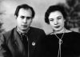

Страницы авторов "Тёмного леса"
Страница "Литературного Кисловодска"
Пишите нам! temnyjles@narod.ru
Геннадий Трофимов. От восхода до заката (стихи, проза, воспоминания)
Остановиться, оглянуться... (стихи 2002-2010 годов)
стихи Геннадия Трофимова ("Литературный Кисловодск")
Геннадий Трофимов. Письмо в редакцию "Литературного Кисловодска"
Читательская конференция памяти поэта Г.Е. Трофимова
Василий Помещиков. О стихах Геннадия Трофимова
Василий Помещиков. Они будут жить в своих стихах (статья о Г.Е. Трофимове)
Маргарита Самойлова. О поэзии Геннадия Трофимова
Рассказы Елены Довжиковой (Трофимовой)
|  | ||
| студент Горного, Питер, 1951 г. | в 20 лет | с женой Ниной Владимировной (день бракосочетания, Воркута, 1956 г.) |
| рабочие будни, Ухта, геолого-разведочная экспедиция (УГРЭ), 80-е годы | в Кисловодске, 2006 г. | ||
| рабочие будни, Ухта, 2008 г. | на даче, Ухта, 2009 г. |
Страница "Литературного Кисловодска"
Страницы авторов "Литературного Кисловодска"
Последнее изменение страницы 24 Apr 2023
{kind=link}
{kind=link}
{kind=link}
{kind=link}
{kind=link}
{kind=link}
{kind=link}
{kind=link}
{kind=link}